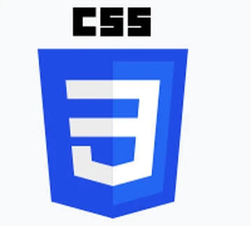

| Image | Skills | Description |
|---|---|---|
| |
HTML | Basics of using Html language to create responsive websites in creative way ,font styles,font types and creating good Html structures |
|  |
CSS | How to add Css structure to Html in order to create a good templete and good websites using css forms |
| |
Computer Networking | I can be able to come up with a simple network in a location and make computers communicate with each other through sharing resources by the use of networking tools like Packet Tracer |
| |
Basic Web Design | I can be able to create responsive websites for all kind of busineses like Restuarants,Hotels,Travel companies, Schools and other businesses |
| |
C programing | I can use C programing language to generate systems that can ease manual work in different organisations like Schools,Hospital and banks |
| |
Graphics Design | i can be able to create professional graphics both digital using computers and alsoanalong type like sketching down and using traditional materials like pencils,colour,pastels,paint etc |